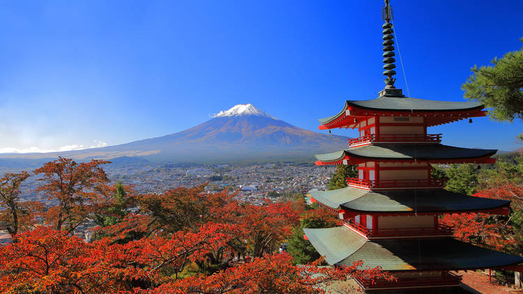
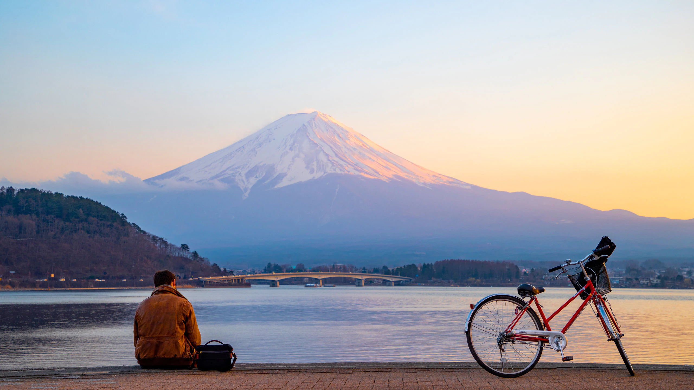
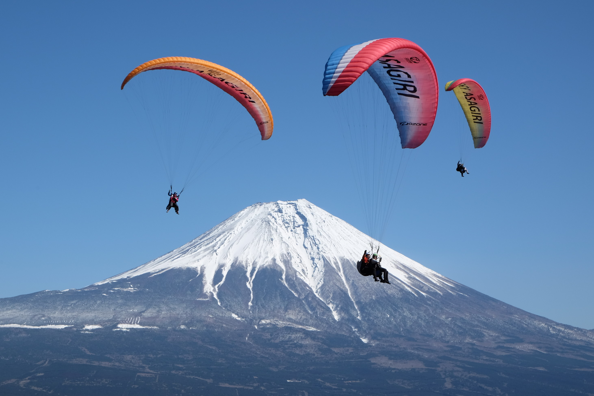

Mount Fuji (富士山, Fujisan) is with 3776 meters Japan's highest mountain. It is not surprising that the nearly perfectly shaped volcano has been worshiped as a sacred mountain and experienced big popularity among artists and common people throughout the centuries. Mount Fuji is an active volcano, which most recently erupted in 1707. It stands on the border between Yamanashi and Shizuoka prefectures and can be seen from Tokyo and Yokohama on clear days. |
|
Gallery |
|
|  |  |
 |
 |